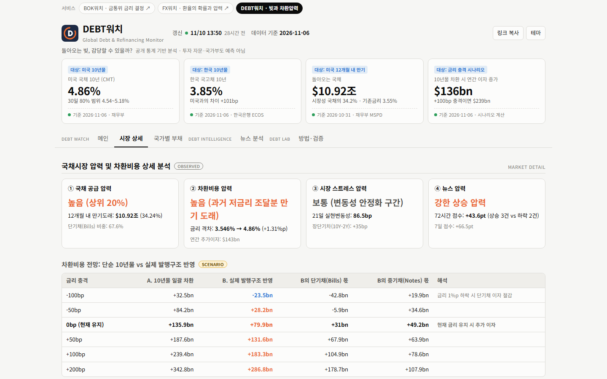
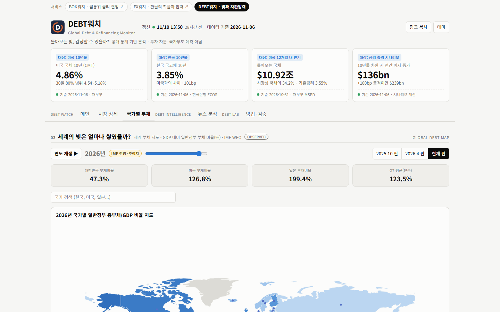
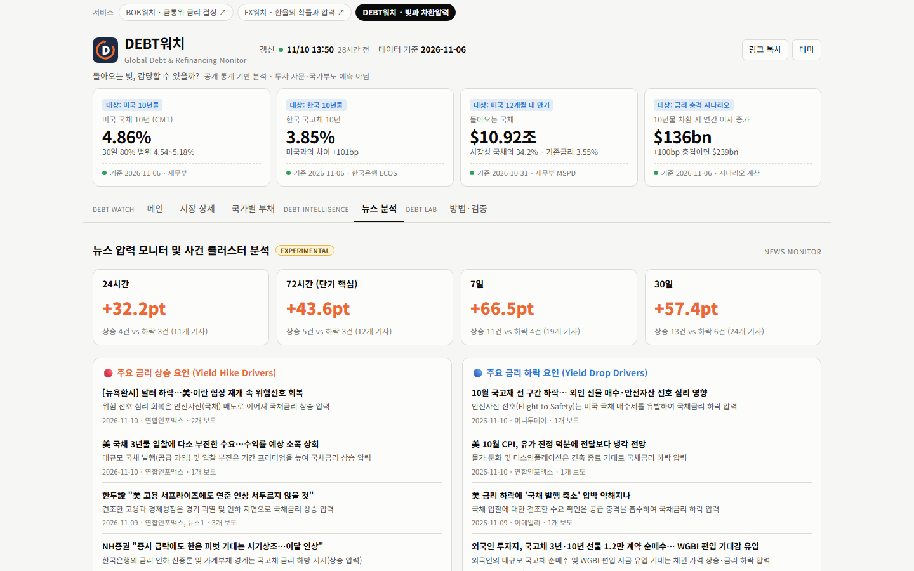

이런 서비스입니다
국가부채 뉴스는 대부분 총액에서 멈춥니다. 몇 조 달러가 쌓였다는 말만으로는 그 빚이 언제 돌아오고, 그때 이자가 얼마나 늘어나는지 알 수 없습니다. 같은 빚이라도 3년 뒤에 갚는 것과 3개월 뒤에 갚는 것은 무게가 다르고, 낮은 금리로 빌렸다가 높은 금리로 갈아타는 순간 이자는 훌쩍 뜁니다.
DEBT워치는 그 차이를 계산합니다. 미국 재무부가 공개하는 국채 종목별 자료(460개 종목)로 만기 도래 사다리를 짜고, 만기가 도래하는 국채를 지금 시장금리로 다시 발행한다고 가정해 추가 이자를 계산합니다. 금리가 오르거나 내릴 때 이자가 어떻게 달라지는지도 시나리오로 보여 줍니다. 한국과 미국의 국채금리는 80% 예상 범위로, 뉴스는 금리를 올리는 힘과 내리는 힘으로 나눠 보여 줍니다.
기준일과 출처를 숫자마다 적고, 모르는 것은 모른다고 씁니다. 한국은 종목별 만기·표면금리 자료를 구하지 못해 차환비용을 계산하지 않았고, 미국 10년물 전망은 검증이 끝날 때까지 방향 확률을 공개하지 않습니다.
공개 통계 기반의 분석이며 투자 자문이나 국가부도 예측이 아닙니다. 차환비용은 가정에 따른 시나리오이고 정부 이자지출 전망이 아닙니다. 이 서비스는 자료 제공 기관의 승인이나 후원을 받은 것이 아닙니다.
무엇을 볼 수 있는가
미국 10년물과 한국 국고채(10년·3년)의 7일, 30일, 90일 후 80% 예상 범위를 띠로 보여 줍니다. 25bp 급등 확률, 21일 모멘텀, 200일선 이격, 한·미 10년 금리차와 추이를 함께 봅니다. 위쪽 요약 카드 네 장(미국 10년물, 한국 10년물, 미국 12개월 내 만기, 금리 충격 시나리오)이 핵심 수치를 먼저 보여 줍니다.
미국 국채시장과 한국 국고채시장 뉴스를 72시간 압력(상승, 중립, 하락)으로 요약하고, 국채 공급 압력, 차환비용 압력, 시장 스트레스 압력을 3대 수급 지표로 보여 줍니다.
만기 국채를 10년물로 일괄 차환하는 단순 계산과, 단기채(Bills)·중기채(Notes) 같은 실제 발행구조를 반영한 계산을 나란히 놓고 금리가 -100bp부터 +200bp까지 변할 때 연간 이자 변화를 봅니다. 3개월부터 120개월까지 만기 도래 사다리와 미·한·일·독·영 5개국 10년 국채금리 현황도 있습니다.
IMF 세계경제전망으로 국가별 GDP 대비 일반정부 부채 비율을 지도에 칠하고, 연도 재생으로 1980년부터 2031년까지의 변화를 봅니다. IMF 판(2025.10, 2026.4, 현재)을 바꿔 가며 상위 15개국과 주요국 시계열을 비교하고, 한국 중앙정부 채권 발행잔액과 1년 내 만기, 외화표시 비중, 국외 보유 비중도 확인합니다.
24시간, 72시간, 7일, 30일 기간의 뉴스 압력 점수와 주요 금리 상승·하락 요인, 최근 거시 사건 타임라인을 보여 줍니다. 같은 사건을 여러 언론사가 보도해도 하나의 사건 클러스터로 묶어 기사량에 의한 왜곡을 막습니다. 채권 가격과 금리는 반대로 움직인다는 인과관계 가이드도 붙어 있습니다.
데이터 출처와 수집 상태, 기계가 읽을 수 있는 JSON 파일 목록, 미국 10년물 전망 모델의 백테스트 성적표와 데이터 무결성 감사 결과를 공개합니다. 텍스트 요약(report)과 llms.txt, 수집 상태 페이지도 따로 제공합니다.
화면 미리보기
메인 — 한·미 국채금리 전망

시장 상세 — 차환비용 시나리오와 만기 사다리

국가별 부채 — 세계 부채 지도

뉴스 분석 — 금리를 올리고 내리는 힘
데이터와 계산 방법
백테스트 결과 미국 10년물의 방향 적중률은 7일 47.8%(592건), 30일 51.6%(589건), 90일 51.0%(580건)로, 방향 확률 모델은 정식 공개 기준을 넘지 못해 "모델 검증 중"으로 두고 전망 확률을 공개하지 않습니다. 80% 예상 범위 포함률은 76%~79.6%였습니다. 반면 30일 안에 금리가 10bp 이상, 25bp 이상 떨어지는 사건에서는 기준 모델보다 나은 신호가 확인됐다고 밝힙니다.
알 수 없는 것들
종목별 만기와 표면금리 자료는 미국 재무부만 확보했습니다. 한국, 일본, 영국, 독일, 이탈리아는 국채금리 곡선 위주이고, 종목별 자료가 없는 나라에는 만기 지도와 차환비용을 만들지 않았습니다. 한국은 연간 국고채 발행한도와 평균 만기도 공식 문서에서 숫자를 읽지 못해 싣지 않았습니다.
차환비용은 가정에 따른 시나리오이며 정부의 실제 이자지출이 아닙니다. 뉴스 압력 지수는 시장 심리를 보는 정성적 보조 지표로, 통계 모델과 합산하지 않습니다. 한국 부채비율처럼 IMF가 판을 바꾸며 수정한 수치도 있으므로 판 이름과 기준 시점을 함께 봐야 합니다.
수치의 정확성, 완전성, 적시성은 보장되지 않습니다. 이용에 따른 판단과 책임은 이용자에게 있습니다.
기술 및 제작 방식
Python 수집기가 공식 API와 통계 파일을 받아 정적 JSON으로 만들고, 사이트는 그 JSON만 읽어 화면을 그립니다. 전망·뉴스 압력·차환 시나리오·만기 사다리·세계 지도 지오메트리는 모두 /data 아래의 JSON으로 공개돼 있습니다. 세계 지도 경계는 Natural Earth(공공 영역)를 쓰며 정치적 입장을 나타내지 않습니다.
개발 현황
2026-11-10 13:50 갱신, 데이터 기준 2026-11-06. 6개 공식 출처가 정상 수집 중이고 수집 상태 페이지에 공개됩니다. 미국 10년물 방향 전망은 검증 중이라 확률을 공개하지 않습니다.